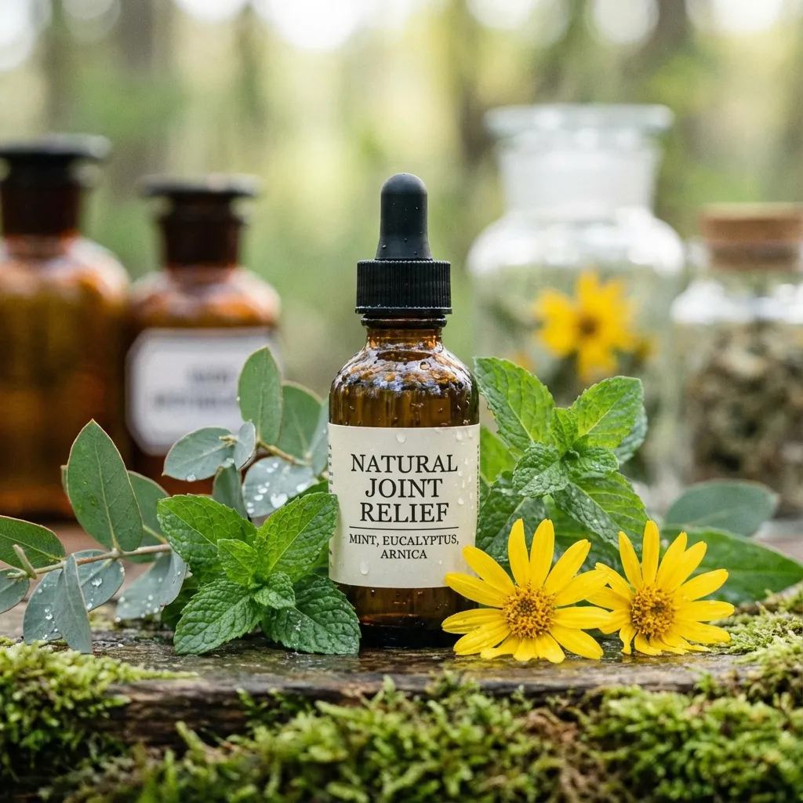

Hondro Sol: Solución Natural para las Articulaciones
Hondro Sol representa una solución innovadora para el cuidado de las articulaciones, combinando ingredientes naturales con tecnología moderna para promover la flexibilidad, movilidad y bienestar articular. Este producto está diseñado para personas que buscan mantener sus articulaciones saludables de manera natural.
¿Qué es Hondro Sol?
Hondro Sol es un producto especializado que utiliza una fórmula avanzada basada en ingredientes de origen natural para apoyar la salud de las articulaciones. Su enfoque integral aborda tanto el alivio de molestias existentes como la prevención del deterioro articular a largo plazo.

Composición y Mecanismo de Acción
La efectividad de Hondro Sol radica en su cuidadosa selección de ingredientes activos que trabajan sinérgicamente:
- Extractos vegetales antiinflamatorios: Reducen la hinchazón y el malestar
- Compuestos regenerativos: Apoyan la reparación del tejido conectivo
- Nutrientes esenciales: Proporcionan los bloques de construcción para cartílago saludable
- Antioxidantes naturales: Protegen contra el daño oxidativo en las articulaciones
Beneficios para la Salud Articular
Los usuarios de Hondro Sol reportan múltiples beneficios tras su uso regular. La mejora en la movilidad es uno de los efectos más notables, permitiendo realizar actividades diarias con mayor comodidad. También se observa una reducción en la rigidez, especialmente aquella que se siente por las mañanas o después de períodos de inactividad.
Este producto es particularmente beneficioso para personas activas que desean proteger sus articulaciones del desgaste relacionado con el ejercicio, así como para aquellos que experimentan molestias debido a la edad o condiciones preexistentes.
Cómo Usar Hondro Sol
Para obtener resultados óptimos, es importante seguir las instrucciones de uso específicas del producto. Generalmente, la aplicación o consumo regular y constante es clave para experimentar beneficios sostenidos. La paciencia es fundamental, ya que los productos naturales para articulaciones típicamente requieren varias semanas de uso antes de mostrar mejoras significativas.
Enfoque Integral para el Cuidado Articular
Hondro Sol funciona mejor cuando se integra en un programa completo de cuidado articular. Combinarlo con productos como Hondrofrost para aplicación tópica y Hondrodox para soporte nutricional puede proporcionar beneficios más completos.
Además, incorporar suplementos que apoyen la salud general, como el triple magnesio, puede mejorar la función muscular alrededor de las articulaciones, reduciendo la tensión sobre ellas.
Estilo de Vida y Prevención
Aunque Hondro Sol ofrece soporte significativo, mantener articulaciones saludables requiere un enfoque holístico. El ejercicio regular de bajo impacto, como natación o yoga, fortalece los músculos que soportan las articulaciones sin causarles estrés excesivo.
La nutrición también juega un papel crucial. Alimentos antiinflamatorios, hidratación adecuada y el mantenimiento de un peso corporal saludable reducen la carga sobre las articulaciones. Complementar la dieta con hierbas adaptógenas como el shatavari puede ayudar a equilibrar la respuesta inflamatoria del cuerpo.
Opciones Naturales Complementarias
Para quienes buscan maximizar la salud articular de forma natural, considerar productos de apiterapia como las cremas con veneno de abeja puede ofrecer beneficios antiinflamatorios adicionales. Estos productos funcionan mediante mecanismos diferentes pero complementarios a Hondro Sol.
💚 Encuentra Hondro Sol en Amazon
Cuida tus articulaciones de forma natural con Hondro Sol. Disponible en Amazon.
Ver Hondro Sol en Amazon →